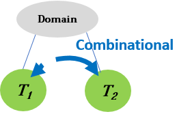

You will now watch a video segment that mentions LUNGDISEASE (related to PHYSICAL HEALTH) and TREATMENT (related to LEVEL OF INDEPENDENCE). The segment is taken from a YouTube video with ID= j3t5nFnTULQ , and starts at 0.56 with duration of 49 seconds.
You will now watch a video segment that mentions LUNGCANCER (related to PHYSICAL HEALTH) and TREATMENT (related to LEVEL OF INDEPENDENCE). The segment is taken from a YouTube video with ID= tfxB32Vb5hE , and starts at 0.02 with duration of 97 seconds.
You will now watch a video segment that mentions ALCOHOL , DIET (related to PHYSICAL HEALTH) and TREATMENT (related to LEVEL OF INDEPENDENCE). The segment is taken from a YouTube video with ID= E8nRS2LxFdw , and starts at 0.46 with duration of 43 seconds.
You will now watch a video segment that mentions LUNGCANCER (related to PHYSICAL HEALTH) and TREATMENT (related to LEVEL OF INDEPENDENCE). The segment is taken from a YouTube video with ID= -Tyo2YsA0Y0 , and starts at 0.05 with duration of 33 seconds.